Moodle+R を、
もっと使いやすく。
Make Moodle+R
easier to use.
让 Moodle+R
更加好用。
Moodle+R을
더 편리하게.
Moodle+R,
más fácil de usar.
Extension for Moodle+R は、立命館大学の LMS「Moodle+R」の時間割やコースページを見やすく整え、毎日の授業の確認をちょっとラクにする拡張機能です。
Extension for Moodle+R tidies up the timetable and course pages of Moodle+R, Ritsumeikan University's LMS, making it a little easier to keep track of your classes every day.
Extension for Moodle+R 是一款让立命馆大学的学习管理系统“Moodle+R”的课表和课程页面更加清晰易读的扩展程序，让您每天查看课程更轻松。
Extension for Moodle+R은 리츠메이칸 대학의 LMS "Moodle+R"의 시간표와 수업 페이지를 보기 쉽게 정리해, 매일 수업을 확인하는 일을 조금 더 편하게 해 주는 확장 프로그램입니다.
Extension for Moodle+R ordena el horario y las páginas de los cursos de Moodle+R, el LMS de la Universidad Ritsumeikan, para que revisar tus clases cada día sea un poco más fácil.
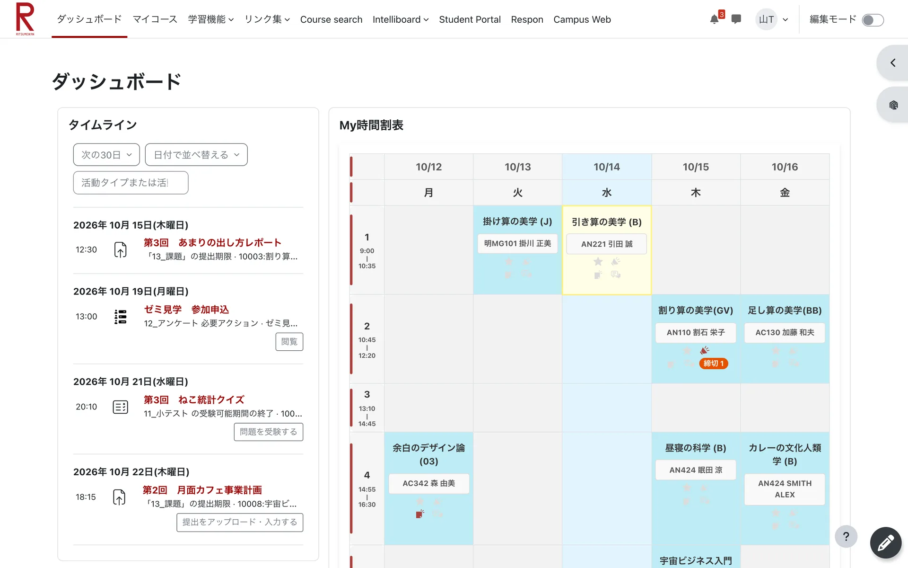
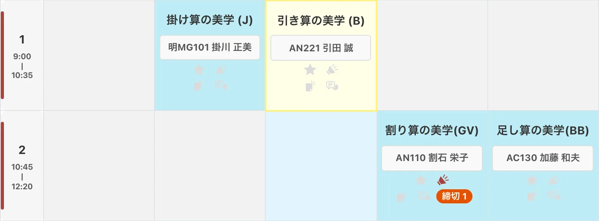
使い方は、3 ステップだけ。
Just three steps to get started.
只需 3 步即可上手。
사용법은 단 3단계.
Solo tres pasos.
特別な設定は要りません。いつものように Moodle+R を開けば、すぐに効果が出ます。
No setup needed. Just open Moodle+R as usual and you'll see the difference right away.
无需任何特别设置。像平常一样打开 Moodle+R，即可立即看到效果。
별도의 설정은 필요 없습니다. 평소처럼 Moodle+R을 열면 바로 효과를 확인할 수 있습니다.
No hace falta configurar nada. Abre Moodle+R como siempre y verás el cambio al instante.
Moodle+R を開くOpen Moodle+R打开 Moodle+RMoodle+R 열기Abre Moodle+R
ダッシュボードを開くだけで、時間割が見やすいレイアウトに切り替わります。
Just open the dashboard and your timetable switches to an easier-to-read layout.
只需打开仪表板，课表就会切换为更易读的布局。
대시보드를 열기만 하면 시간표가 보기 쉬운 레이아웃으로 바뀝니다.
Con solo abrir el panel, tu horario cambia a un diseño más fácil de leer.
右端のボタンをクリックClick the button on the right edge点击右侧的按钮오른쪽 끝의 버튼 클릭Pulsa el botón del borde derecho
画面右端に追加されたキューブ型のボタンから、設定ドロワーが開きます。ツールバーの拡張機能アイコンからも開けます。
The cube-shaped button added to the right edge of the screen opens the settings drawer. You can also open it from the extension icon in the toolbar.
点击屏幕右侧新增的立方体形状按钮，即可打开设置抽屉。也可以从工具栏中的扩展程序图标打开。
화면 오른쪽 끝에 추가된 큐브 모양 버튼을 누르면 설정 서랍이 열립니다. 툴바의 확장 프로그램 아이콘에서도 열 수 있습니다.
El botón con forma de cubo añadido en el borde derecho de la pantalla abre el panel de configuración. También puedes abrirlo desde el icono de la extensión en la barra de herramientas.
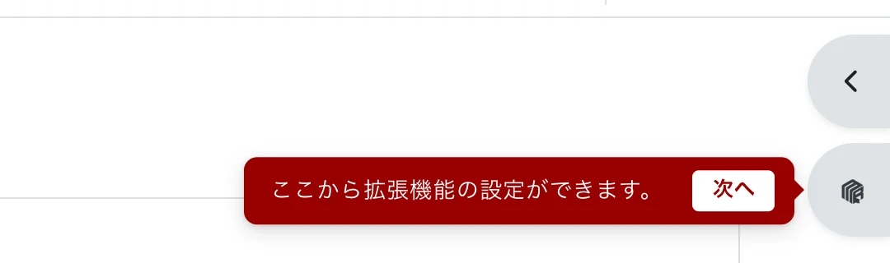
好みに合わせて設定Make it yours按喜好进行设置취향에 맞게 설정Ajústala a tu gusto
機能のオン・オフ、時間割の色、表示言語などをいつでも切り替えられます。
Turn features on or off and change the timetable colors or display language at any time.
您可以随时开启或关闭各项功能，或更改课表颜色和显示语言等。
기능 켜기·끄기, 시간표 색상, 표시 언어 등을 언제든지 바꿀 수 있습니다.
Activa o desactiva funciones y cambia los colores del horario o el idioma cuando quieras.
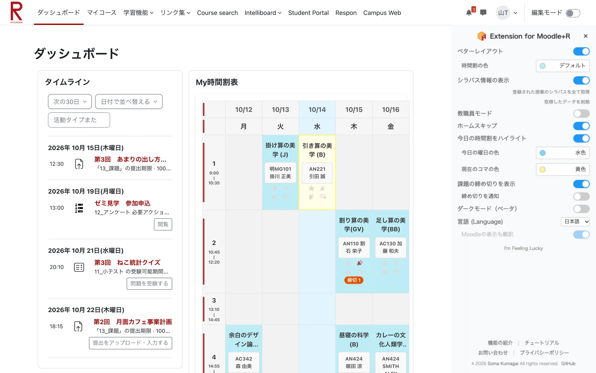
ひと目で違いがわかる。
See the difference at a glance.
差别一目了然。
한눈에 보이는 차이.
La diferencia, a simple vista.
つまみを左右にドラッグして、拡張機能の適用前と適用後を比べてみてください。
Drag the handle left and right to compare Moodle+R before and after the extension.
左右拖动滑块，比较使用扩展程序前后的效果。
손잡이를 좌우로 드래그해 확장 프로그램 적용 전후를 비교해 보세요.
Arrastra el control a izquierda y derecha para comparar Moodle+R antes y después de la extensión.
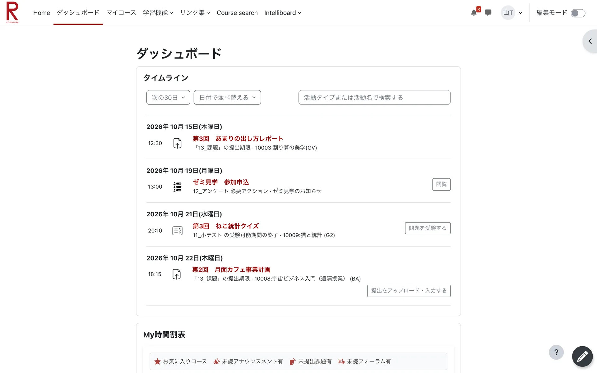
適用前Before使用前적용 전Antes適用後After使用后적용 후Después ドラッグして比べるDrag to compare拖动进行比较드래그해서 비교Arrastra para comparar毎日の Moodle+R を、すみずみまで。
Improvements across your everyday Moodle+R.
全面提升每天使用的 Moodle+R。
매일 쓰는 Moodle+R을 구석구석까지.
Mejoras en cada rincón de tu Moodle+R.
どの機能も設定ドロワーからオン・オフできます。画像はクリックすると拡大できます。
Every feature can be turned on or off from the settings drawer. Click an image to enlarge it.
所有功能都可以在设置抽屉中开启或关闭。点击图片可放大查看。
모든 기능은 설정 서랍에서 켜고 끌 수 있습니다. 이미지를 클릭하면 크게 볼 수 있습니다.
Puedes activar o desactivar cada función desde el panel de configuración. Haz clic en una imagen para ampliarla.
ベターレイアウトBetter Layout优化布局더 나은 레이아웃Mejor Diseño
タイムラインと時間割を横に並べて、画面を広く使います。
Places the timeline and timetable side by side to make better use of the screen.
将时间线和课表并排显示，更充分地利用屏幕空间。
타임라인과 시간표를 나란히 배치해 화면을 넓게 사용합니다.
Coloca la cronología y el horario uno al lado del otro para aprovechar mejor la pantalla.
- 曜日に日付、時限に授業時間を表示Shows the date for each weekday and the time of each period在星期上显示日期，在节次上显示上课时间요일에 날짜, 교시에 수업 시간 표시Muestra la fecha de cada día y la hora de cada periodo
- 授業名から授業コードなどの余分な表記を省略Removes course codes and other clutter from class names省略课程名称中的课程代码等多余内容수업명에서 수업 코드 등 불필요한 표기 생략Quita los códigos de curso y otros datos innecesarios de los nombres de las clases
- シラバス取得済みなら教室の横に先生の名前も表示Shows the teacher's name next to the room once the syllabus has been fetched获取教学大纲后，还会在教室旁显示授课教师姓名강의 계획서를 가져오면 강의실 옆에 교수 이름도 표시Muestra el nombre del profesor junto al aula si ya se ha obtenido el temario
今日の時間割をハイライトHighlight Today's Timetable高亮显示今日课表오늘의 시간표 강조Resaltar el Horario de Hoy
今日の曜日の列と、いま行われている授業のコマに色が付き、次に向かう教室が一目でわかります。時間割のベース、今日の曜日、現在のコマの色は、それぞれ好みの色に変えられます。
Today's column and the class happening right now are highlighted, so you can see at a glance where to go next. You can pick your own colors for the timetable, today's column, and the current class.
今天的那一列和正在进行的课程会以颜色突出显示，下一节课去哪里一目了然。课表、今日列和当前课程的颜色都可以按喜好更改。
오늘 요일의 열과 지금 진행 중인 수업 칸에 색이 칠해져, 다음에 갈 강의실을 한눈에 알 수 있습니다. 시간표, 오늘 열, 현재 수업의 색상은 각각 원하는 색으로 바꿀 수 있습니다.
La columna de hoy y la clase que está en curso se resaltan, para que veas de un vistazo a dónde ir. Puedes elegir los colores del horario, de la columna de hoy y de la clase actual.
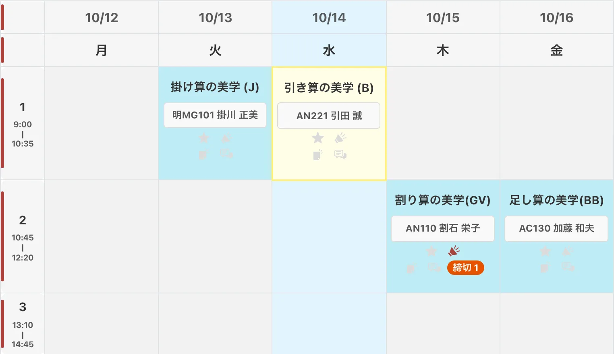
課題の締め切りを表示Show Deadlines显示作业截止时间과제 마감 표시Mostrar Fechas LímiteNEW
7 日以内の課題や小テストなどの締め切りを、時間割の授業に件数で表示します（マウスを乗せると日時と課題名を表示）。24 時間以内の件数は拡張機能のアイコンにも表示されます。
Shows the number of assignment, quiz, and other deadlines within 7 days on each class in your timetable (hover to see the dates and names). The number due within 24 hours also appears on the extension icon.
在课表的各门课程上显示7天内作业、小测验等的截止数量（鼠标悬停可查看日期和名称），24小时内截止的数量也会显示在扩展图标上。
7일 이내 과제·퀴즈 등의 마감 건수를 시간표의 각 수업에 표시합니다(마우스를 올리면 일시와 이름 표시). 24시간 이내 마감 건수는 확장 프로그램 아이콘에도 표시됩니다.
Muestra en cada clase de tu horario cuántas tareas, cuestionarios y otras actividades vencen en los próximos 7 días (pasa el cursor para ver las fechas y los nombres). Las que vencen en 24 horas también se cuentan en el icono de la extensión.
「締め切りを通知」をオンにすると、締め切りの 24 時間前と 1 時間前にお知らせします。不要な締め切りは、バッジをクリックして開く一覧や通知から非表示にできます。
Turn on Deadline Notifications to be notified 24 hours and 1 hour before each deadline. Deadlines you don't need can be hidden from the list that opens when you click a badge, or from the notification.
开启“截止提醒”后，会在截止前24小时和1小时通知您。不需要的截止事项可以在点击徽章打开的列表或通知中隐藏。
'마감 알림'을 켜면 마감 24시간 전과 1시간 전에 알려 드립니다. 필요 없는 마감은 배지를 클릭해 여는 목록이나 알림에서 숨길 수 있습니다.
Activa Avisos de Fechas Límite para recibir un aviso 24 horas y 1 hora antes de cada fecha límite. Las fechas límite que no necesites se pueden ocultar desde la lista que se abre al hacer clic en una insignia o desde el aviso.
シラバス情報の表示Display Syllabus显示教学大纲강의 계획서 표시Mostrar Temario
コースページに「シラバス」ボタンを追加し、ワンクリックでシラバスを開けます。一度シラバスを開くと、開講曜日・時限、担当教員、単位数、教室を自動で取得してコースページに表示します。
Adds a "Syllabus" button to course pages so you can open the syllabus in one click. Once you open a syllabus, the schedule, teacher, credits, and room are fetched automatically and shown on the course page.
在课程页面添加“教学大纲”按钮，一键即可打开教学大纲。只需打开一次教学大纲，就会自动获取上课时间、授课教师、学分和教室，并显示在课程页面上。
수업 페이지에 '강의 계획서' 버튼을 추가해 한 번의 클릭으로 강의 계획서를 열 수 있습니다. 강의 계획서를 한 번 열면 수업 요일·교시, 담당 교수, 학점, 강의실을 자동으로 가져와 수업 페이지에 표시합니다.
Añade un botón «Temario» a las páginas de los cursos para abrir el temario con un solo clic. Al abrir un temario una vez, se obtienen automáticamente el horario, profesor, créditos y aula y se muestran en la página del curso.
教室名をクリックするとキャンパスマップを開けます。設定ドロワーの「登録された授業のシラバスを全て取得」で一括取得もできます。
Click the room name to open the campus map. You can also fetch everything at once with "Fetch all registered syllabus data" in the settings drawer.
点击教室名称即可打开校园地图。也可以通过设置抽屉中的“获取所有已注册课程的教学大纲”一次性获取。
강의실 이름을 클릭하면 캠퍼스 맵을 열 수 있습니다. 설정 서랍의 '등록된 모든 강의 계획서 데이터 가져오기'로 한꺼번에 가져올 수도 있습니다.
Haz clic en el nombre del aula para abrir el mapa del campus. También puedes obtenerlo todo de una vez con «Obtener todos los datos de temarios registrados» en el panel de configuración.
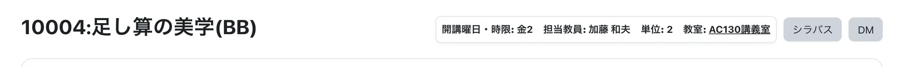
ダークモードDark Mode深色模式다크 모드Modo Oscuro
Moodle+R 全体を目に優しい暗めの配色にします。夜の課題作業にも。
Switches all of Moodle+R to a darker color scheme that's easier on the eyes, great for late-night assignments.
将整个 Moodle+R 切换为柔和的深色配色，减轻眼睛负担，适合夜间写作业。
Moodle+R 전체를 눈이 편안한 어두운 색상으로 바꿉니다. 밤에 과제할 때도 좋아요.
Cambia todo Moodle+R a una combinación de colores oscura y más cómoda para la vista, ideal para hacer tareas de noche.
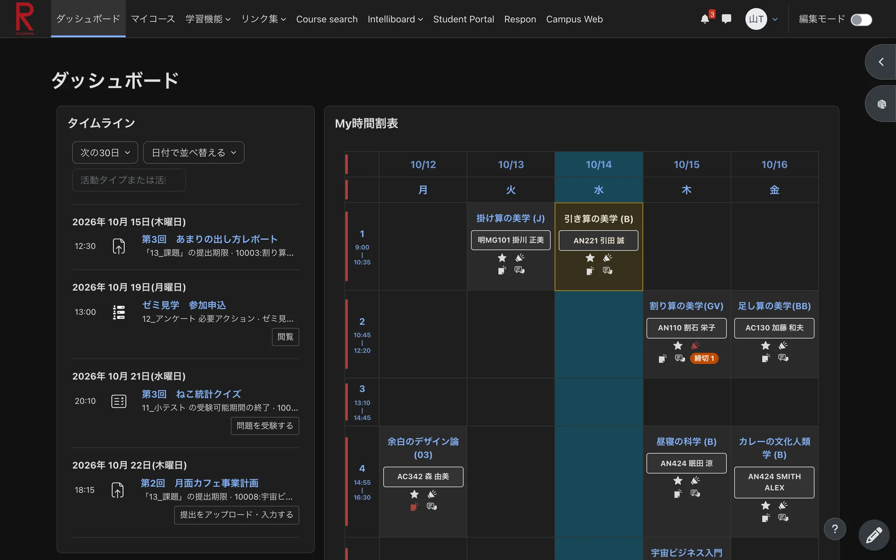
5 言語に対応Available in 5 Languages支持 5 种语言5개 언어 지원Disponible en 5 idiomas
設定ドロワーとこのページは日本語・英語・中国語・韓国語・スペイン語に対応しています。日本語以外を選ぶと、Moodle のメニューやボタン、日付なども選んだ言語で表示します。
The settings drawer and this page are available in Japanese, English, Chinese, Korean, and Spanish. If you choose a language other than Japanese, Moodle's menus, buttons, dates, and more are also shown in that language.
设置抽屉和本页面支持日语、英语、中文、韩语和西班牙语。选择日语以外的语言后，Moodle 的菜单、按钮和日期等也会以所选语言显示。
설정 서랍과 이 페이지는 일본어, 영어, 중국어, 한국어, 스페인어를 지원합니다. 일본어 이외의 언어를 선택하면 Moodle의 메뉴, 버튼, 날짜 등도 선택한 언어로 표시됩니다.
El panel de configuración y esta página están disponibles en japonés, inglés, chino, coreano y español. Si eliges un idioma distinto del japonés, los menús, botones, fechas y demás elementos de Moodle también se muestran en ese idioma.
先生が投稿した内容やコース名は翻訳しません。設定の「Moodleの表示も翻訳」でオフにできます。
Content posted by teachers and course names are not translated. You can turn this off with "Translate Moodle UI" in the settings.
教师发布的内容和课程名称不会被翻译。可在设置中通过“同时翻译 Moodle 界面”关闭此功能。
교수님이 올린 내용과 수업명은 번역하지 않습니다. 설정의 'Moodle 화면도 번역'에서 끌 수 있습니다.
El contenido publicado por el profesorado y los nombres de los cursos no se traducen. Puedes desactivarlo con «Traducir también la interfaz de Moodle» en la configuración.
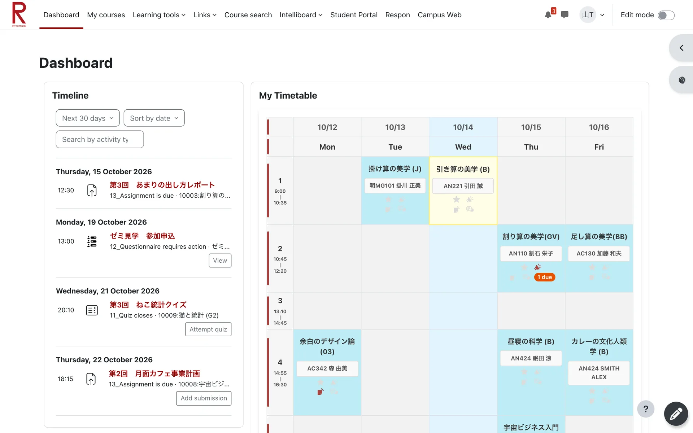
✉️ 先生へ DMMessage Your Teacher (DM)给老师发私信 (DM)교수님께 DMMensaje al profesor (DM)
コースページの「DM」ボタンから、担当の先生へのメッセージ画面をすぐに開けます。
The "DM" button on course pages opens a message to the class's teacher right away.
通过课程页面上的“DM”按钮，可立即打开给授课教师发送消息的界面。
수업 페이지의 'DM' 버튼으로 담당 교수님께 메시지를 보내는 화면을 바로 열 수 있습니다.
El botón «DM» de las páginas de los cursos abre al instante un mensaje para el profesor de la asignatura.
✅ フォーラムを一括既読Mark Forum as Read论坛一键已读포럼 모두 읽음Marcar Foro como Leído
フォーラムに「すべて既読にする」ボタンを追加。未読の投稿をワンクリックでまとめて既読にできます。
Adds a "Mark all as read" button to forums so you can mark every unread post as read in one click.
在论坛中添加“全部标记为已读”按钮，一键即可将所有未读帖子标记为已读。
포럼에 '모두 읽음으로 표시' 버튼을 추가해, 읽지 않은 게시물을 한 번에 읽음 처리할 수 있습니다.
Añade a los foros un botón «Marcar todo como leído» para marcar todas las publicaciones no leídas con un solo clic.
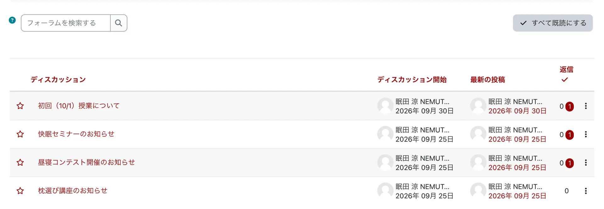
⏭️ ホームスキップSkip Home跳过首页홈 건너뛰기Omitir Inicio
使わないトップページを飛ばして、ダッシュボードへ直接移動します。
Skips the unused top page and takes you straight to the dashboard.
跳过不常用的首页，直接进入仪表板。
사용하지 않는 시작 페이지를 건너뛰고 대시보드로 바로 이동합니다.
Omite la página de inicio que no usas y te lleva directamente al panel.
🏫 教職員モードStaff Mode教职工模式교직원 모드Modo Personal
ナビゲーションに教職員ポータル、教務支援、Respon、打刻などのリンクを追加します。
Adds links for faculty and staff (Staff Portal, Respon, Timeclock, etc.) to the navigation bar.
在导航栏中添加教职工专用链接（教职工门户、Respon、打卡等）。
내비게이션 바에 교직원용 링크(교직원 포털, Respon, 근태 관리 등)를 추가합니다.
Añade a la barra de navegación enlaces para el personal (Portal del Personal, Respon, Control de Asistencia, etc.).
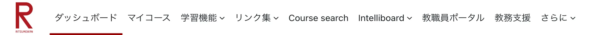
ご利用にあたって
Before You Use
使用须知
이용 안내
Antes de usar
免責事項Disclaimer免责声明면책 조항Descargo de Responsabilidad
本拡張機能は個人が開発した非公式なツールであり、立命館大学およびMoodleとは一切関係ありません。本拡張機能について大学側に問い合わせることがないようにお願いいたします。
本拡張機能の利用によって生じたいかなる直接的・間接的なトラブル、不利益、または損害（例: 課題の提出遅延、データの未反映など）について、開発者は一切の責任を負いません。すべて自己責任でのご利用をお願いいたします。
また、大学側のシステム（Moodleやシラバスなど）のアップデートや仕様変更により、本拡張機能が正常に動作しなくなる、あるいは画面表示が崩れる場合があるほか、開発者の裁量により予告なく機能の追加・変更・アップデート、または本拡張機能の提供を停止することがあります。あらかじめご了承ください。
なお、本拡張機能をインストールした時点で、免責事項に同意したものとみなします。
This extension is an unofficial tool developed by an individual and is not affiliated with Ritsumeikan University or Moodle. Please do not contact the university regarding this extension.
The developer assumes no responsibility for any direct or indirect trouble, disadvantage, or damage (e.g., delayed assignment submissions, unreflected data) caused by the use of this extension. Please use it entirely at your own risk.
In addition, due to updates or specification changes in the university's systems (such as Moodle or Syllabus), this extension may stop working properly or the display may become distorted. Furthermore, the developer may add, change, update features, or discontinue the provision of this extension without notice. Please be aware of this in advance.
By installing this extension, you are deemed to have agreed to this disclaimer.
本扩展程序为个人开发的非官方工具，与立命馆大学及 Moodle 没有任何关系。请勿向大学方面咨询有关本扩展程序的问题。
对于因使用本扩展程序而造成的任何直接或间接麻烦、不利或损害（例如：作业提交延迟、数据未反映等），开发者不承担任何责任。请完全自行承担风险使用。
此外，由于大学系统（如 Moodle 或教学大纲）的更新或规格变更，本扩展程序可能会无法正常工作，或者画面显示可能会崩溃。此外，开发者可能会自行决定在不另行通知的情况下添加、更改、更新功能或停止提供本扩展程序。请事先知悉。
另外，在您安装本扩展程序时，即视为您已同意本免责声明。
본 확장 프로그램은 개인이 개발한 비공식 도구이며, 리츠메이칸 대학 및 Moodle과는 전혀 관계가 없습니다. 본 확장 프로그램에 대해 대학 측에 문의하지 마십시오.
본 확장 프로그램의 이용으로 인해 발생한 직·간접적인 문제, 불이익 또는 손해(예: 과제 제출 지연, 데이터 미반영 등)에 대해 개발자는 일체의 책임을 지지 않습니다. 전적으로 사용자 본인의 책임하에 사용하시기 바랍니다.
또한, 대학 시스템(Moodle이나 강의 계획서 등)의 업데이트나 사양 변경에 따라 본 확장 프로그램이 정상적으로 작동하지 않거나 화면 표시가 깨질 수 있습니다. 또한, 개발자의 재량에 따라 예고 없이 기능 추가, 변경, 업데이트를 하거나 본 확장 프로그램의 제공을 중단할 수 있습니다. 이 점 미리 양해 부탁드립니다.
아울러, 본 확장 프로그램을 설치한 시점에 면책 조항에 동의한 것으로 간주합니다.
Esta extensión es una herramienta no oficial desarrollada por un individuo y no está afiliada con la Universidad de Ritsumeikan o Moodle. Por favor, no contacte a la universidad en relación con esta extensión.
El desarrollador no asume ninguna responsabilidad por ningún problema, desventaja o daño directo o indirecto (por ejemplo, envíos de tareas retrasados, datos no reflejados) causado por el uso de esta extensión. Utilícela bajo su propio riesgo.
Además, debido a actualizaciones o cambios de especificaciones en los sistemas de la universidad (como Moodle o Temario), esta extensión puede dejar de funcionar correctamente o la visualización puede distorsionarse. Además, el desarrollador puede agregar, cambiar, actualizar funciones o suspender la provisión de esta extensión sin previo aviso. Por favor, tenga esto en cuenta de antemano.
Al instalar esta extensión, se considera que ha aceptado este descargo de responsabilidad.
プライバシーポリシーPrivacy Policy隐私政策개인정보처리방침Política de Privacidad
本拡張機能における個人情報の取り扱いについては、こちらのプライバシーポリシーをご確認ください。
なお、本拡張機能をインストールした時点で、プライバシーポリシーに同意したものとみなします。
For the handling of personal information in this extension, please check this Privacy Policy.
By installing this extension, you are deemed to have agreed to the privacy policy.
关于本扩展程序中对个人信息的处理方式，请查看此隐私政策。
在您安装本扩展程序时，即视为您已同意该隐私政策。
본 확장 프로그램의 개인정보 취급에 대해서는 이 개인정보처리방침을 확인해 주십시오.
아울러, 본 확장 프로그램을 설치한 시점에 개인정보처리방침에 동의한 것으로 간주합니다.
Para el manejo de información personal en esta extensión, por favor revise esta Política de Privacidad.
Al instalar esta extensión, se considera que ha aceptado la política de privacidad.
サポートと連絡先
Support and Contact
支持与联系
지원 및 문의
Soporte y Contacto
不具合のご報告、機能のご要望、その他ご質問などがございましたら、お気軽にご連絡ください。
If you have any bug reports, feature requests, or other questions, please feel free to contact us.
如果您有任何错误报告、功能请求或其他问题，请随时与我们联系。
버그 신고, 기능 요청 또는 기타 질문이 있으시면 언제든지 문의해 주세요.
Si tienes algún informe de errores, solicitud de funciones u otra pregunta, no dudes en contactarnos.
開発を応援するSupport Development支持开发개발 응원하기Apoya el desarrollo
もしこの拡張機能が役に立ったと感じていただけたら、開発のサポートをしていただけると嬉しいです。PayPay アプリの「送る」から、こちらの PayPay ID 宛てにお送りいただけます。
If you find this extension useful, I would appreciate your support for its development. In the PayPay app, tap 「送る」 (Send) and search for the PayPay ID shown here.
如果您觉得这个扩展程序有用，希望能得到您的支持，以帮助我们继续开发。在 PayPay 应用中点击「送る」（转账），搜索这里的 PayPay ID 即可。
이 확장 프로그램이 유용하다고 생각되신다면, 개발을 위해 후원해 주시면 감사하겠습니다. PayPay 앱에서 「送る」(보내기)를 누르고 여기의 PayPay ID를 검색해 주세요.
Si esta extensión te resulta útil, agradecería tu apoyo para su desarrollo. En la app de PayPay, pulsa 「送る」 (Enviar) y busca el ID de PayPay que aparece aquí.